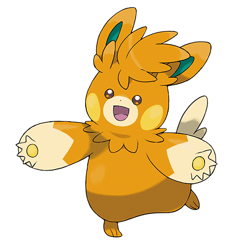
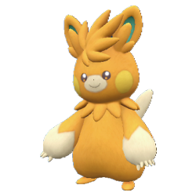
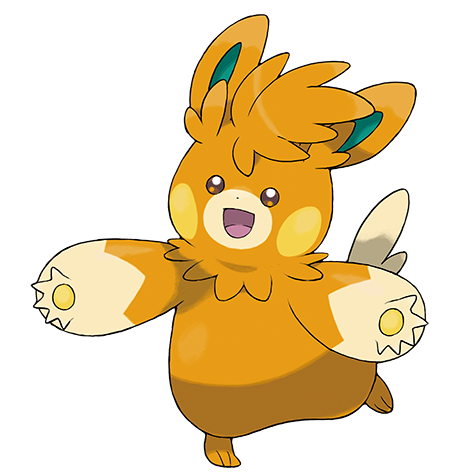
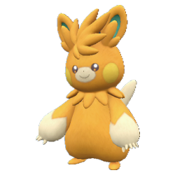

Ph0t0:D
Alright, pictures of my friends on my Instagram
And photos of my toes on my OnlyFans
And visuals in these frames look better than the ones that she posted on Facebook
I'm ready when you wanna point that, shoot that, pop that, Polaroid that
Screw that, chop that lean,  that shit that only happen in my wildest dreams
The shit we talk about and listen to behind the screens
And I be tryna stream consciousness
Baby, you be tryna stream songs like this
I told you I just want to remember this
I told you I be tryna create memories
But everybody 'round me want a check

Only thing that keep me outta that bag full of that white
Or that bottle full of that red is photos on my desk
Only thing that keep me out of my head when I'm in my bed
Is the photos on the wall, back when we had it all
So I been tryna keep track of it
Catch it and it vanish like a magic trick
Especially when we was on Xans and shit
Truthfully I don't even understand that shit
Another stanza
My bitch an actor, my homie managing 
Making sure that they payin' us
I'm just a natural when it come to pickin' the brands up
And I'm only 25, G
Tell that bitch to take a picture for the photo ID
that shit that only happen in my wildest dreams
The shit we talk about and listen to behind the screens
And I be tryna stream consciousness
Baby, you be tryna stream songs like this
I told you I just want to remember this
I told you I be tryna create memories
But everybody 'round me want a check

Only thing that keep me outta that bag full of that white
Or that bottle full of that red is photos on my desk
Only thing that keep me out of my head when I'm in my bed
Is the photos on the wall, back when we had it all
So I been tryna keep track of it
Catch it and it vanish like a magic trick
Especially when we was on Xans and shit
Truthfully I don't even understand that shit
Another stanza
My bitch an actor, my homie managing 
Making sure that they payin' us
I'm just a natural when it come to pickin' the brands up
And I'm only 25, G
Tell that bitch to take a picture for the photo ID